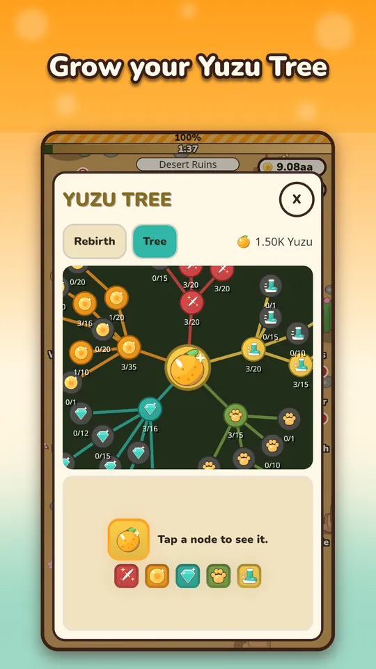
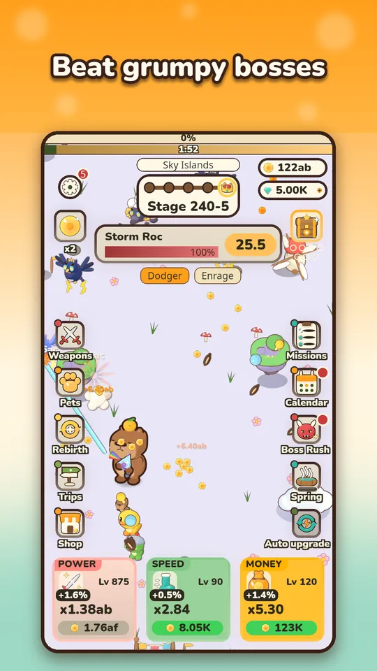

Sooner or later every Capy Kingdom player hits a boss that no upgrade will fix, and the Rebirth button starts to glow. This is how rebirth works in Capy Kingdom, why it is worth doing, and how to spend the Golden Yuzu it pays. It is the system I spent the most time balancing, so I will be specific about the parts I can vouch for.
What rebirth is
Rebirth is the game's prestige reset. You give up your current run, your climb through the stages starts over, and in return you receive Golden Yuzu. Golden Yuzu does two things at once: it adds a permanent damage bonus that grows with the Yuzu you have earned in total, and it is the currency for the Yuzu Tree. If you are still on your first day, start with the beginner tips, because rebirth makes more sense after a few boss walls.

When is the right time to rebirth?
Rebirth unlocks around stage 60 in the way I tuned the game, and the first one comes quickly for most players. After that, the signal is simple: you are stuck at the same boss or stage for a long time, and extra coins no longer move you. In this kind of game, coins are log-elastic. Doubling your farming time buys only a handful of extra stages, so past a wall, a reset is faster than waiting.
- Rebirth when several upgrade rounds in a row do not beat the boss, and the stage time limit keeps pushing you back.
- Wait when you are close to a milestone stage and one more round of Power might break through.
- Read the Rebirth tab before you confirm, so you know what you are trading.

How much Golden Yuzu you get
Golden Yuzu per rebirth grows with the best stage you reached in that run, and it grows faster than linearly, so every extra stage you push before resetting is worth more than the last. The damage bonus from it is 1 plus 0.06 times your lifetime Golden Yuzu. I deliberately made the formula grow a little slower than the enemies do, so each run takes a bit longer than the last but never stalls completely. A rebirth after a long, patient run pays much more than several rushed resets.
Why the second climb is fast
The game remembers your best stage ever. After a rebirth, a catch-up dash carries you through stages whose bosses fall within 20 seconds, up to 25 stages at a time, so you are not replaying hours of fights. It stops at the first stage you cannot beat, and from there you climb normally with your new multiplier. If it ever feels slow, the upgrade order article has the order I would follow.
Spending Golden Yuzu in the Yuzu Tree
The tree has 44 permanent perks in five branches, shown in the screenshot as red, orange, teal, green and yellow. Roughly speaking, they cover damage, coins, diamonds, pets and speed. Each node has levels, shown as a small fraction like 3/20, and nodes unlock as you invest in the ones next to them. A few examples that exist in the game: a perk that raises how long offline earnings last, one that makes the Diamond Spring fill faster, and a Crate Luck perk that shifts crate odds toward higher rarities.
The important part: spending Yuzu never lowers your rebirth damage bonus. The bonus counts everything you earned, not what you hold, so the tree never competes with raw power. Tap any node to read what it does before you spend.
Common rebirth mistakes
- Resetting too early. A rebirth right after the unlock gives little Yuzu. A longer run pays disproportionately more.
- Resetting too late. If you sit at the same wall for days while offline coins barely move you, you are losing time you could have spent on a stronger run.
- Spreading Yuzu thinly. Tree nodes unlock through their neighbors, so a path toward one strong perk usually beats one level on every branch.
- Treating it as a punishment. The first rebirth feels like losing progress, but your best stage is remembered, and the catch-up dash returns you there quickly.
A simple rebirth routine
- Push until a boss wall holds you for a long stretch.
- Read the Rebirth tab, then confirm.
- Spend the Yuzu on nodes that match how you play. Check-in players like offline and Spring perks, active players like damage and speed.
- Let the catch-up dash take you back to your best stage, then keep climbing.
Offline earnings still matter between runs, and the Welcome back screen is how you collect them. The genre overview explains why prestige is the heart of every idle game.

Why I designed it this way
I wanted rebirth to be a decision, not a chore. Idle games where you reset every few minutes feel like homework, and games with no reset feel like they run out. The balance I aimed for is a long climb, where each run is a bit longer than the previous one and each rebirth leaves you clearly stronger. That is also why the damage bonus counts lifetime Golden Yuzu: nothing you earn is ever taken back, even when you spend it.
Try it
Rebirth feels best once you have felt the wall for yourself. Play Capy Kingdom on Google Play, push to your first big boss, and see what Golden Yuzu does for the next run.
Frequently Asked Questions
What is Golden Yuzu in Capy Kingdom?
Golden Yuzu is the currency you earn from rebirth. It permanently raises your damage and is also spent in the Yuzu Tree on permanent perks. The more Yuzu you earn in a run, the stronger every future run becomes.
Does spending Golden Yuzu lower my damage?
No. The rebirth damage bonus is based on the Golden Yuzu you have earned in total, not the amount you still hold. You can spend Yuzu in the tree without weakening the bonus.
Do I lose my weapons and pets when I rebirth?
Your climb through the stages restarts, but the game remembers your best stage ever and fast-forwards you back toward it with a catch-up dash over stages whose bosses fall quickly. Read the Rebirth tab before confirming.